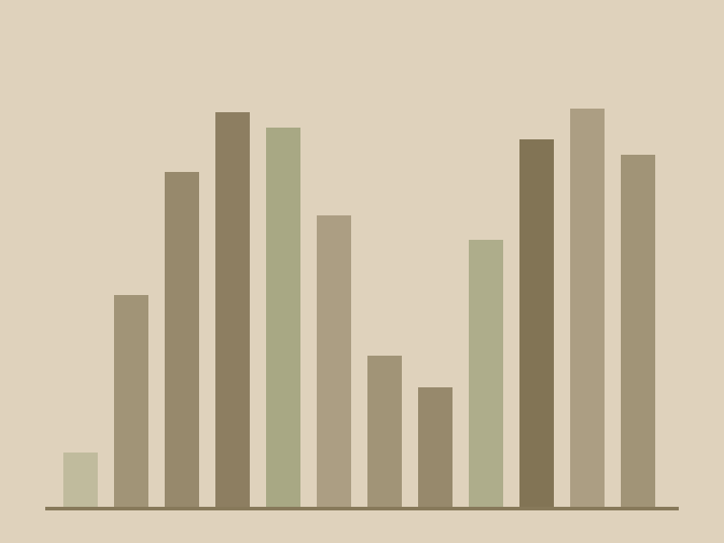

Market Entry Scoring Model
A quantitative scoring model across 40+ regulatory frameworks and 10+ U.S. markets, built to narrow the field to four.
- WhereHazen and Sawyer, New York
- WhenJan 2026 to May 2026
- TypeStrategy / Consulting

Context
The firm needed to decide where to expand next. Regulatory conditions vary enormously between U.S. markets, and the existing approach to site selection leaned on familiarity rather than evidence. The brief was to replace that with something defensible.
What I built
A scoring model synthesising 40+ regulatory frameworks across 10+ markets. The hard part was not the arithmetic but the mapping: turning heterogeneous regulatory language into comparable, weighted variables that a reviewer could challenge line by line.
The financial case
Alongside the scoring work I ran ROI and profitability analysis through financial modelling and structured due diligence, so that a high scoring market also had to survive the question of whether it would pay.
Outcome
Four high potential markets were prioritised for executive decision making. I translated the findings into executive ready narratives for Legal, Finance and Operations, and partnered with cross functional teams on industry trend analysis that fed continuous process improvement back into the site selection methodology.
- Financial Modelling
- ROI Analysis
- Due Diligence
- Excel
- Strategy